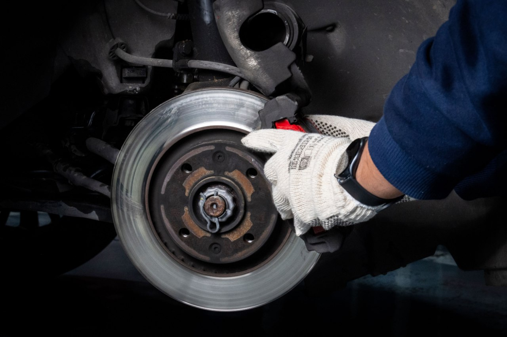

Home / Brakes
Brakes Squealing After New Pads? 8 Causes and Fixes
Quick answer
A light squeal for a few days is often just new pads bedding in. Persistent noise usually comes from missing shims or clips, no grease on the contact points, sticking slide pins, glazed pads or worn discs. Check the hardware, clean and grease the contact points, bed the pads in properly, and get the car checked if you hear grinding or the pedal feels wrong.

You fit new pads to get rid of the noise, and now the car squeals louder than before. It's annoying, but it's usually fixable and often harmless. The trick is knowing which kind of squeal you have.
New pads can be noisier than the old ones, especially in the first few days. In my experience the first things worth checking are the anti-rattle clips, the caliper slide pins and the contact points on the pads. A small mistake during fitting is enough to cause a squeal that doesn't go away.
First: is this noise a problem?
A light squeal at low speed that fades after a few days is usually just new pads settling. Treat it more seriously if you notice any of these:
- Grinding or a rough, scraping sound
- A pedal that feels soft, sinks, or pulses
- The car pulling to one side when you brake
- A burning smell after normal driving
Safety note. Brakes are a safety system. If the pedal feels wrong or the car pulls under braking, stop driving and have it checked by a qualified mechanic.
The most common causes
1. The pads haven't bedded in yet
New pads need a little time to match the shape of the disc and lay down an even layer of friction material. Until then, some noise is normal. See the bedding steps below.
2. Glazed pads or discs
Heavy braking on pads that haven't been bedded in can overheat them and leave a hard, shiny surface. Glazed pads grip worse and squeal more. Mild glazing sometimes wears off with normal driving; bad glazing means new pads and a look at the discs.
3. Missing or reused anti-squeal hardware
Many pads come with metal shims, clips or springs. If they were left off, fitted the wrong way round, or the old rusty ones were reused, the pad can vibrate against the caliper. That vibration is what you hear. Most pad kits include fresh hardware, so use it.
4. No brake grease on the contact points
The metal edges of the pad backing plate slide in the caliper bracket. A thin film of high-temperature brake grease there lets the pad move freely and stops it chattering. Grease goes on the metal contact points only. Never put it on the pad surface or the disc.
5. Sticking caliper slide pins
If the slide pins are dry or corroded, the caliper can't float properly. The pad drags on one side and wears unevenly. Clean the pins and fit them back with the right grease (usually silicone-based for pins with rubber boots, but check the instructions that came with your parts).
6. Worn or uneven discs
A disc with a raised lip at the edge, deep grooves or a rusty ring can make new pads noisy. Check the disc thickness against the minimum marked on it or in your manual. Fitting new pads on a worn disc is a common cause of repeat noise.
7. A hard pad compound
Some pads, especially performance or very cheap ones, are simply noisier, particularly when cold. If everything else checks out, this may just be the pad you chose.
8. Moisture, dust and surface rust
A short squeal first thing on a damp morning is normal. A thin layer of rust forms on the discs overnight and wipes off in the first few stops.
If you fitted the pads yourself, compare your steps with How to Change Brake Pads Yourself. Not sure whether the discs need replacing too? Brake Pads vs Rotors explains how to decide.
How to bed in new pads
Bedding-in steps vary by pad maker, so follow the instructions in the box if there are any. A common general approach looks like this:
- Find a quiet, safe road with no traffic behind you.
- Brake firmly (not an emergency stop) from about 35 mph (55 km/h) down to about 5 mph (10 km/h). Don't come to a complete stop.
- Repeat several times, with a short pause between each.
- Then drive for a few minutes with minimal braking so everything cools down.
- Avoid holding the pedal down with the car stopped while the brakes are very hot.
Fixing the squeal at home
- Park on level ground, loosen the wheel bolts, lift the car and support it on jack stands.
- Remove the wheel and look at the pads. Are the shims and clips in place and the right way round?
- Clean the bracket contact points with brake cleaner and a brush.
- Apply a thin film of brake grease to the contact points of the pad backing plates.
- Check the slide pins move smoothly. Clean and re-grease them if they don't.
- Look over the disc surface and measure the thickness if you can.
- Refit everything and tighten the wheel bolts to the torque in your manual.
- Bed the pads in again as described above.
A harsh metallic sound is a different problem; read Grinding Noise When Braking. A pedal that feels wrong needs the checklist in Spongy Brake Pedal: Causes and What to Check.
When to get a professional
If the noise continues after bedding-in and a hardware check, if you feel vibration through the pedal, or if you're not sure the discs are within spec, a workshop can measure and fix it quickly. It's cheaper than repeating pads.
Quick checklist
- Pads bedded in properly
- Shims and clips fitted
- Grease on metal contact points only
- Slide pins moving freely
- Discs in good shape
FAQ
Why do my new brake pads squeal?
Most often because they haven't bedded in, the shims or clips are missing or reused, there's no grease on the pad contact points, or the discs are worn.
How long should new pads squeal?
A light squeal that fades within a few days is normal. If it persists after bedding in and a hardware check, have the brakes inspected.
Is it safe to drive with squealing new brakes?
Usually yes, if the pedal feels normal and the car stops straight. Grinding, a soft pedal or pulling to one side means stop and get it checked.
Where do I put brake grease?
A thin film on the metal contact points of the pad backing plate and on the slide pins, as the instructions say. Never on the pad surface or the disc.
This guide is general information based on personal experience, not professional advice. Check your own vehicle's manual for exact specs and read the disclaimer before starting any job.